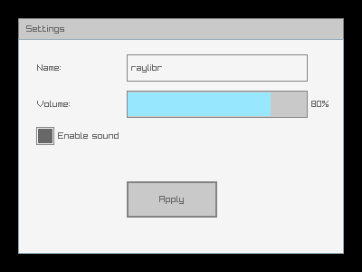
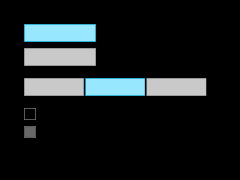
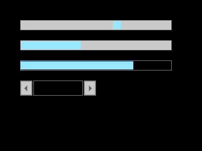
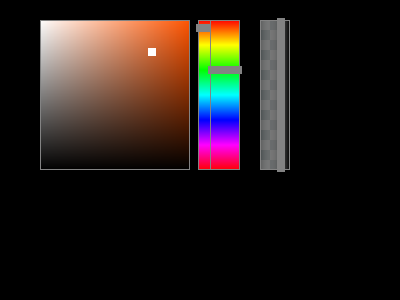

raygui is an immediate-mode GUI library bundled with raylibr. Unlike retained-mode GUI toolkits (where you create widgets once and query their state), immediate-mode GUIs call a function for each control every frame. The function draws the control and returns its current value or interaction state.
Layout
Every control is positioned with a
rectangle(x, y, width, height). There is no automatic
layout — you place each control explicitly.
raylibr_screenshot(function() {
gui_panel(rectangle(20, 20, 360, 260), "Settings")
gui_label(rectangle(40, 60, 100, 30), "Name:")
gui_text_box(rectangle(140, 60, 200, 30), "raylibr", 64L, FALSE)
gui_label(rectangle(40, 100, 100, 30), "Volume:")
gui_slider_bar(rectangle(140, 100, 200, 30), "", "80%", 0.8, 0, 1)
gui_check_box(rectangle(40, 140, 20, 20), "Enable sound", TRUE)
gui_button(rectangle(140, 200, 100, 40), "Apply")
})
Buttons and labels
gui_button() draws a clickable button and returns
TRUE when clicked:
if (gui_button(rectangle(100, 100, 120, 40), "Click me")) {
# handle click
}gui_label() draws static text.
gui_label_button() is a clickable text label.
Toggles and checkboxes
raylibr_screenshot(function() {
gui_toggle(rectangle(40, 40, 120, 30), "Option A", TRUE)
gui_toggle(rectangle(40, 80, 120, 30), "Option B", FALSE)
gui_toggle_group(rectangle(40, 130, 100, 30), "Low;Medium;High", 1L)
gui_check_box(rectangle(40, 180, 20, 20), "Fullscreen", FALSE)
gui_check_box(rectangle(40, 210, 20, 20), "VSync", TRUE)
})
gui_toggle() returns the new active state.
gui_toggle_group() shows multiple options and returns the
selected index. gui_check_box() returns the new checked
state.
Sliders and progress bars
raylibr_screenshot(function() {
gui_slider(rectangle(40, 40, 300, 20), "0", "100", 65, 0, 100)
gui_slider_bar(rectangle(40, 80, 300, 20), "Vol", "", 0.4, 0, 1)
gui_progress_bar(rectangle(40, 120, 300, 20), "", "75%", 0.75, 0, 1)
gui_spinner(rectangle(40, 160, 150, 30), "", 42L, 0L, 100L, FALSE)
})
gui_slider() and gui_slider_bar() return
the new value. gui_progress_bar() is display-only.
gui_spinner() shows a value with +/- buttons.
Text input
gui_text_box() renders an editable text field. The
edit_mode parameter controls whether it’s active for
input:
text <- gui_text_box(rectangle(40, 40, 200, 30), text, 256L, edit_mode)gui_combo_box() shows a dropdown-style selector,
gui_dropdown_box() shows an expandable list.
Color controls
raylibr_screenshot(function() {
gui_color_picker(rectangle(40, 20, 150, 150), "", color(200L, 100L, 50L))
gui_color_bar_hue(rectangle(210, 20, 30, 150), "", 120)
gui_color_bar_alpha(rectangle(260, 20, 30, 150), "", 0.7)
})
gui_color_picker() returns a color.
gui_color_bar_hue() returns a hue value (0-360).
gui_color_bar_alpha() returns an alpha value (0-1).
Containers
-
gui_panel(bounds, text)— a bordered panel with an optional title -
gui_group_box(bounds, text)— a labeled group outline -
gui_window_box(bounds, text)— a window with a close button (returnsTRUEwhen closed) -
gui_scroll_panel(bounds, text, content, scroll, view)— scrollable area for content larger than the visible region
Styling
Customize the look of controls with gui_set_style():
# Set a property for a specific control type
gui_set_style(gui_control$button, gui_control_property$text_color_normal, 0xFF0000FF)
# Load a complete style file
gui_load_style("my_style.rgs")
# Reset to defaults
gui_load_style_default()State functions control whether controls are interactive:
gui_disable() # gray out all controls
gui_enable() # re-enable
gui_lock() # controls visible but non-interactive
gui_unlock()Further reading
See the GUI Controls demo for a complete interactive example with all major control types.